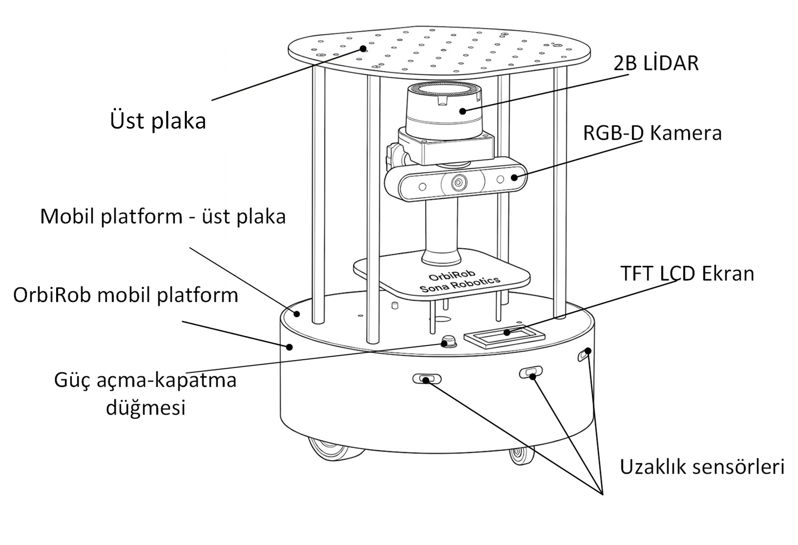
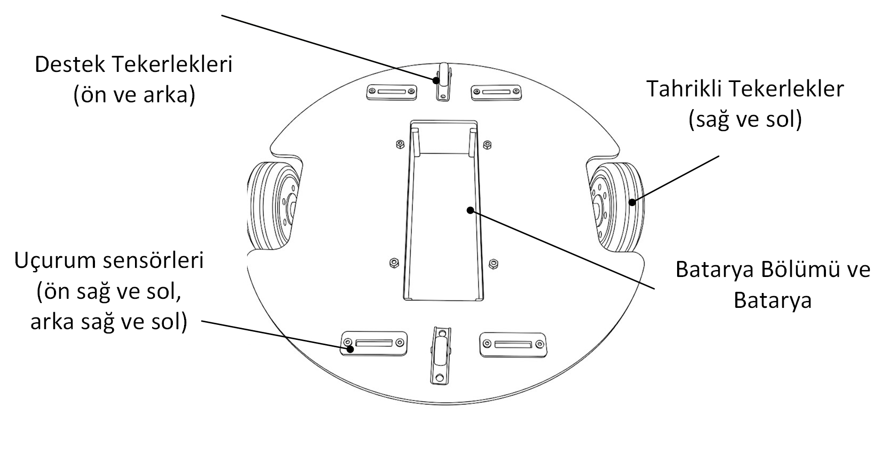
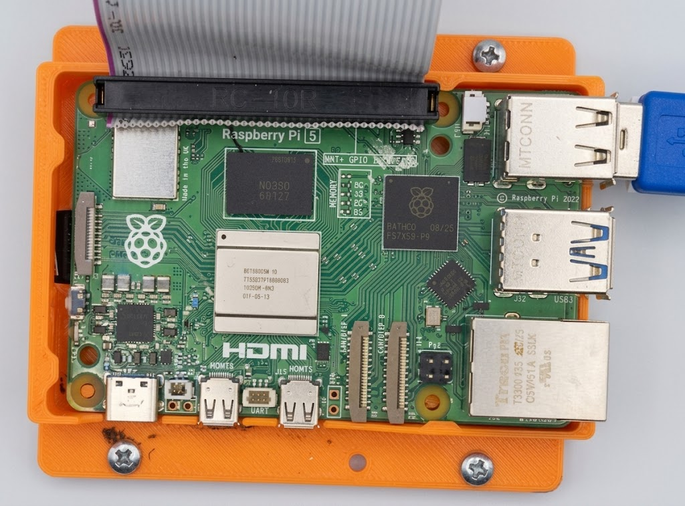
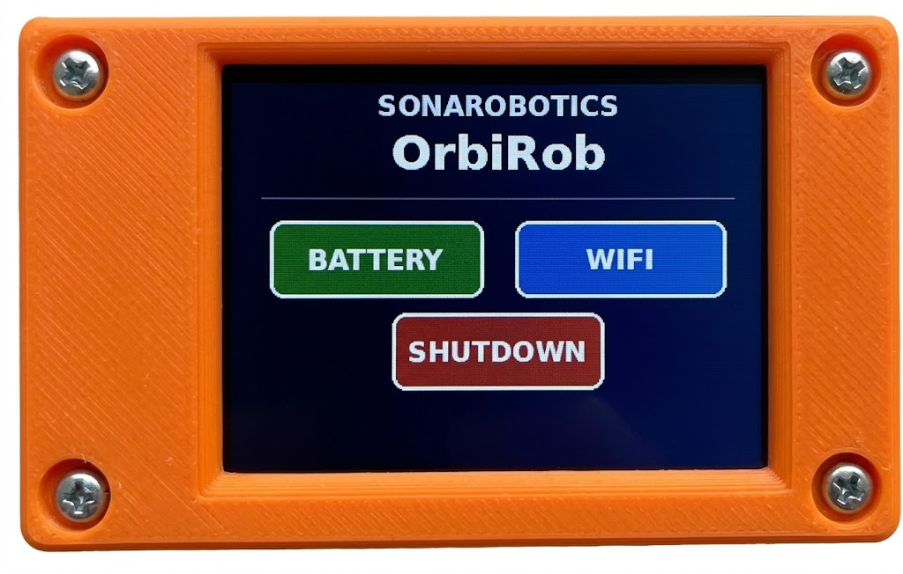
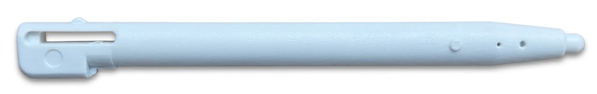

Robotun temel yapısını iki plaka ve ön/arka tamponlardan oluşan taban platformu oluşturur.
Taban platformun önünde 3 adet kısa mesafe sensörü, altında ise 4 adet uçurum sensörü bulunmaktadır.
Taban platformun üzerinde Orbbec Genesis 335L RGB-D kamera ve 360 derece tarama yapabilen bir RPLIDAR C1 içeren bir sensör kulesi bulunmakdaır.
Sensör kulesinin üzerinde ise, kullanıcıların robot ilave sensörler veya farklı yüklerle özelleştirmesine olanak sağlayan üst plaka yer almaktadır.

Şasi ve tampon
Güç düğmesi
Tahrikli tekerlekler
Destek tekerlekleri
TFT Ekran 2.4′′
RGB-D Kamera (Orbbec Gemini 335L)
2B Lidar (RPLidar C1)
Batarya bölümü ve batarya
Mesafe algılayıcıları - 3 adet
Uçurum algılayıcıları - 4 adet

Taban platformunun üst plakasında, güç butonu ve 320 × 240 piksel çözünürlüklü bir2,4 inç TFT LCD dokunmatik ekran bulunmaktadır. Ayrıca kullanıcıların erişimine açık 1 adet USB 3.0 (Type-C) portu, 1 adet HDMI bağlantı noktası bulunmaktadır.
Taban platformu içerisinde bulunan elektronik katmanda, Şekil 5.1’de görüldüğü üzere robotun işlemcisi olan Raspberry Pi 5 yer almaktadır.

Taban platformunun üst panelinde, robotun farklı işlevlerini takip ve kontrol etmek amaçlı bir dokunmatik ekran bulunmaktadır. Şekil 5.2’de gösterildiği üzere, işlemcinin kapatılması ve bazı robotla ilgili bilgilerin takibi buradan yapılabilmektedir Bu ekranda seçimlerin rahatlıkla yapılabilmesi için Şekil 5.2(b)’de gösterilen kalemin kullanılması uygun olur.


Robot; 360 derece tarama yapabilen bir RPLIDAR C1 LiDAR ve bir Orbbec Gemini 335L kamera ile donatılmıştır. Sensörlerin üzerinde bulunan sensör kulesi, kullanıcıların OrbiRob’a ek sensörler veya farklı faydalı yükler (payload) ekleyerek robotu ihtiyaçlarına göre özelleştirmesine olanak sağlar.